KiCad ile PCB Tasarımı: Bionluk'ta Müşteriler İçin Tasarladığım Kartlar
İçindekiler
Bu yaz elektronik tarafında en çok zaman ayırdığım iş, Bionluk üzerinden müşteriler için PCB tasarlamak oldu. "İsteğinize uygun PCB tasarlarım" diye bir ilan açtım ve bugüne kadar 8 siparişi tamamladım; aldığım yorumların hepsi 5 yıldız. Tasarımların tamamını KiCad ile yaptım: müşterinin anlattığı fikirden başlayıp şematiğe, oradan kart yerleşimine ve üretime hazır dosyalara kadar sürecin hepsini ben yürüttüm.
Bu yazıda müşteri bilgilerini paylaşmadan iki tasarımı yakından gösteriyorum. Her tasarımın şematik, PCB ve 3D görünümleri arasında üstteki sekmelerle geçiş yapabilirsin; görsellere dokununca büyüyorlar.
Bir sipariş nasıl ilerliyor?
1. İhtiyacı anlamak. Her şey müşterinin projesini dinlemekle başlıyor: kart ne yapacak, hangi giriş ve çıkışlar lazım, nereden beslenecek, boyut ya da konnektör kısıtı var mı? Bu kısım netleşmeden çizime başlamıyorum.
2. Şematik. Şematiği hiyerarşik kuruyorum: güç girişi, mikrodenetleyici, çıkış katı, giriş katı gibi her blok ayrı bir sayfada duruyor. Böylece hem benim hem müşterinin şemayı okuması kolaylaşıyor.
3. Yerleşim ve yollar. Bileşenleri işlevlerine göre gruplayıp yerleştiriyorum, güç hatlarını sinyal hatlarından daha kalın çiziyorum ve klemensleri kablo bağlamanın kolay olacağı kenarlara alıyorum.
4. Revizyon ve teslim. Tasarımı müşteriyle birlikte gözden geçiriyorum, istenen değişiklikleri yapıyorum ve kartı üretime hazır dosyalarla teslim ediyorum.
Tasarım 1: Trafik Sinyalizasyon Kontrol Kartı
NodeMCU tabanlı, trafik ışıklarını süren ve buton ya da sensör girişlerini okuyan bir kontrol kartı. Şematiği yedi sayfalık hiyerarşik bir yapıda kurdum: güç girişi, NodeMCU kontrol, çıkış katı, giriş katı, genişletme ve konnektörler.
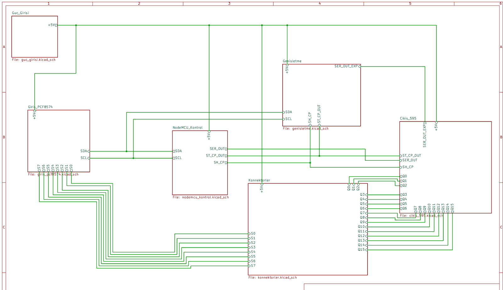
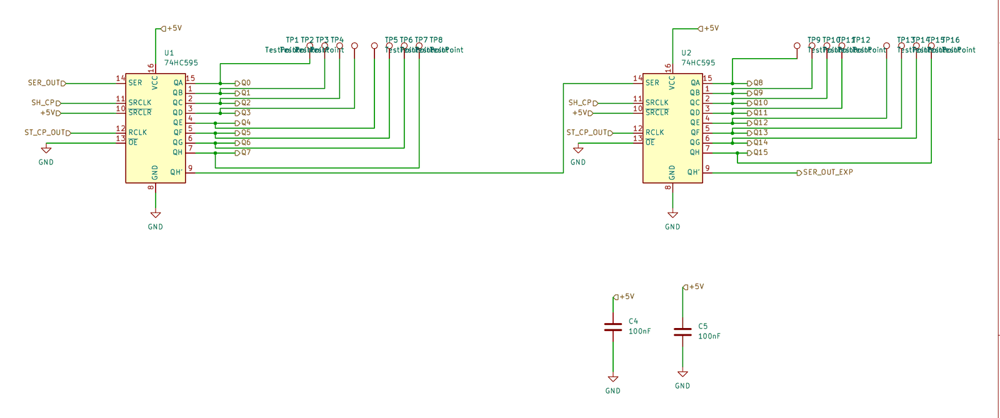
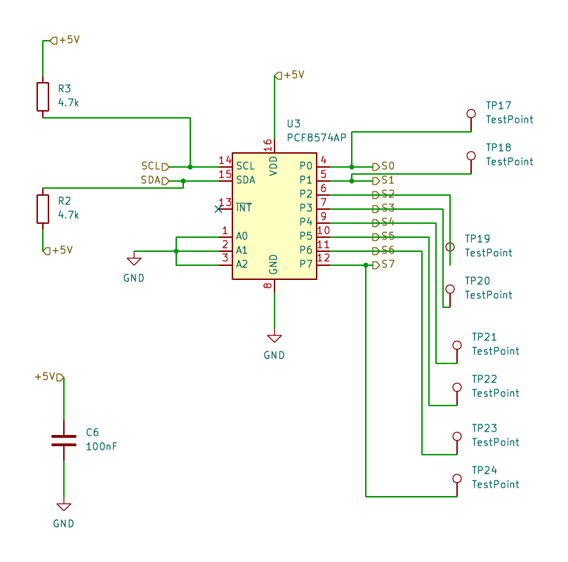
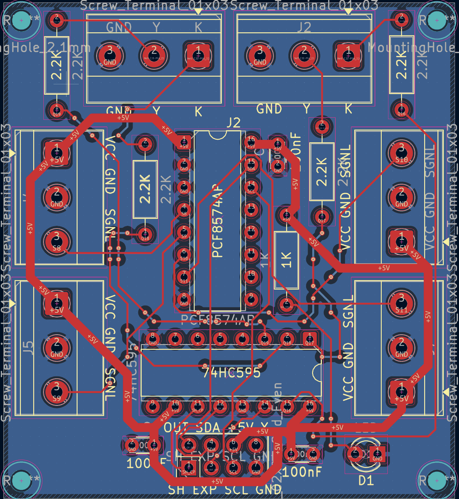
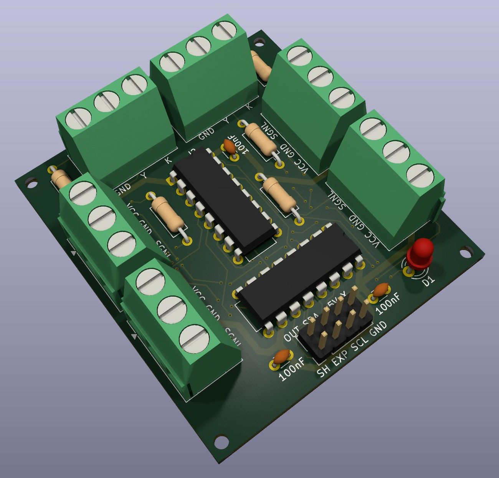
Çıkışlar: Işıkları sürmek için iki adet 74HC595 kaydırmalı yazmacı zincirleme bağladım. Böylece NodeMCU'nun yalnızca üç pinini (veri, saat ve mandal) kullanarak 16 çıkış elde ediliyor.
Girişler: Buton ve sensörler için PCF8574AP I²C port genişleticisini kullandım. Sadece SDA ve SCL hatlarıyla 8 giriş okunabiliyor; hatlardaki 4.7k pull-up dirençleri de şemada.
Güç ve test: Kart bir DC jak ile besleniyor. Ters polariteye karşı 1N5819 Schottky diyot, girişte 470µF ve 100nF filtre kondansatörleri ve bir güç LED'i var. Her giriş ve çıkış için toplam 24 test noktası koydum; kart üretildikten sonra multimetreyle tek tek ölçüm yapmak çok daha kolay oluyor.
Genişletme: Çıkış zincirinin devamını, I²C hattını ve beslemeyi taşıyan 2×4'lük bir konnektör üzerinden aynı yapıdaki genişletme kartları eklenebiliyor. PCB ve 3D sekmelerindeki kart bu genişletme kartı: üzerinde bir 74HC595, bir PCF8574AP, ışık çıkışları ve sensör girişleri için klemensler bulunuyor. Entegreleri DIP kılıfta seçtim, böylece soketle takılıp kolayca değiştirilebiliyorlar.
Tasarım 2: Peltier Sıcaklık Kontrol Kartı
ESP32-WROOM-32 tabanlı, altı Peltier modülünü PWM ile süren bir güç ve kontrol kartı. Fanları, pompaları ve sensörleri de aynı kart yönetiyor. Şematik dokuz sayfadan oluşuyor; burada kontrol ve sürücü sayfalarını gösteriyorum.
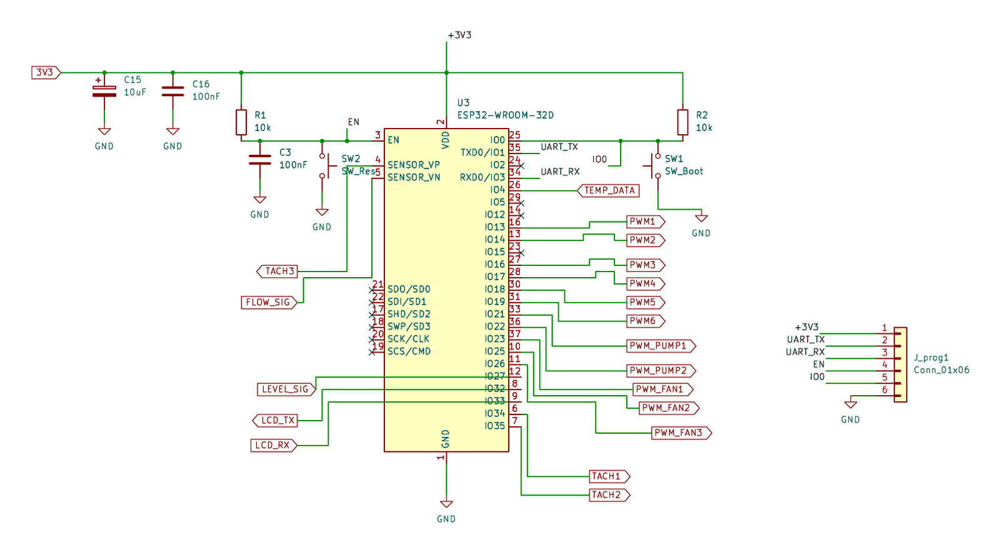
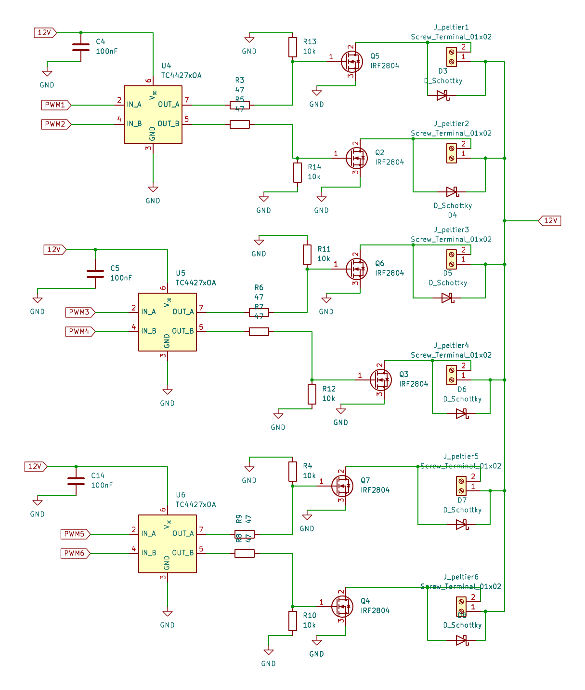
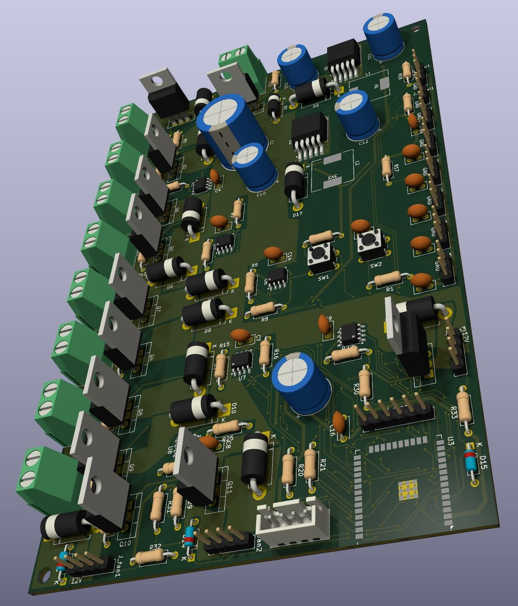
Kontrol: ESP32 üzerinden 6 Peltier PWM kanalı, takometre girişleriyle birlikte 3 fan, 2 pompa, bir sıcaklık sensörü, akış ve seviye sensörü girişleri ve bir LCD için UART hattı yönetiliyor. Reset ve boot butonlarıyla birlikte bir programlama konnektörü de ekledim; kart üzerindeyken yazılım kolayca yüklenebiliyor.
Sürücü katı: ESP32'nin 3.3V'luk çıkışları, Peltier gibi yüksek akım çeken yükleri anahtarlayan bir güç MOSFET'ini tam iletime sokmaya yetmez. Bu yüzden araya TC4427 MOSFET sürücüleri koydum: her biri iki kanal sürüyor, üç tanesiyle altı kanal tamamlanıyor. Anahtarlama IRF2804 N-kanal MOSFET'lerle 12V hattında yapılıyor ve her Peltier çıkışında bir Schottky diyot bulunuyor.
Teknik Detaylar
Müşteriler ne diyor?
Bionluk'taki yorumlardan birkaçı. Alıcıların kullanıcı adlarını ve profil fotoğraflarını gizledim; her yorumun altındaki ekran görüntüsüne dokunarak orijinalini görebilirsin.
“Ahmet Bey, aklımdaki projeyi anlatmam sonucu tam olarak ihtiyacım olan pcb tasarımını çok kısa bir sürede geliştirdi. Kendisine çok teşekkür ediyorum. Güvenle çalışabilirsiniz.”
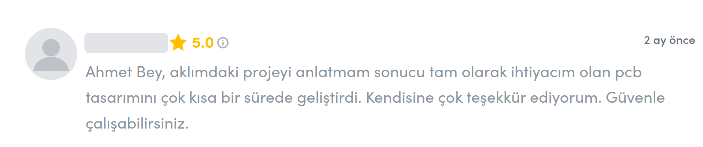
“İhtiyaçlarım doğrultusundaki PCB yi tasarladı ve detaylarını hiç sıkılmadan anlattı teşekkürler”
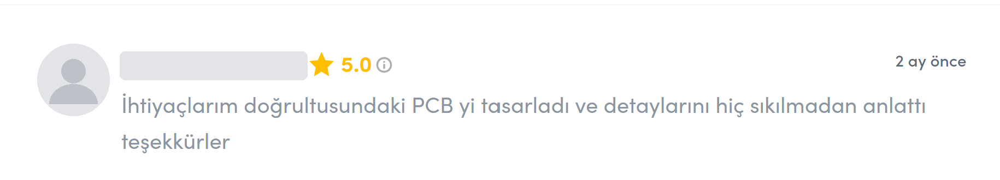
“Ahmet bey, tam istediğim gibi yaptı. İsteklerimi dinledi istişarede bulunduk, hep yardımcı oldu, kısa sürede teslim etti. Bu ilk işimizdi bundan sonrada beraber çalışacağız bionluk üzerinden çok teşekkürler ellerinize sağlık. Başarılarınızın devamını dilerim. Kolay gelsin”
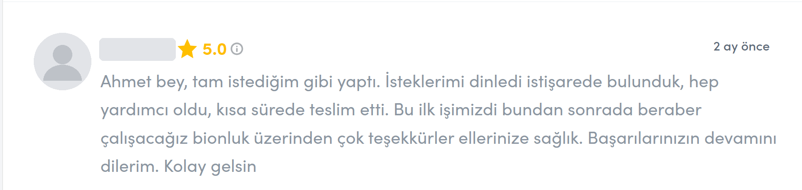
Bionluk'taki tüm yorumlar ve profilim →
Senin de bir PCB ihtiyacın mı var?
Projeni anlat; ihtiyacına göre şematiği ve kartı KiCad ile tasarlayıp üretime hazır dosyalarla teslim edeyim.